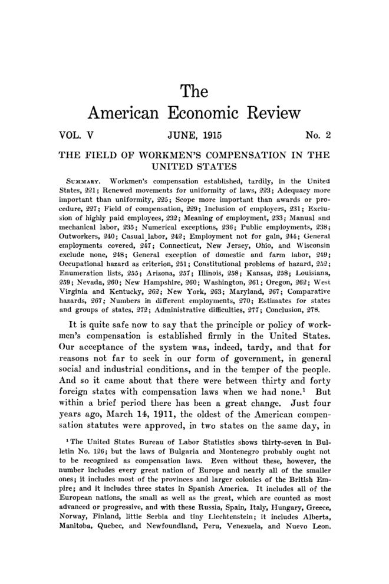

Fisher, 1915: quem ficava fora da indenização por acidente
Leitura: 8 min
Quatro anos depois das primeiras leis americanas de indenização por acidente de trabalho, Willard C. Fisher mede quais empregos elas alcançavam e conclui que a cobertura importa mais que a uniformidade.


Em 14 de março de 1911, Washington e Kansas aprovaram, no mesmo dia, as mais antigas leis de indenização por acidente de trabalho em vigor nos Estados Unidos. Quando Willard C. Fisher escreve, em março de 1915, 23 estados têm leis em pleno vigor. Juntos, tinham em 1910 cerca de 57% da população do país: 52.386.484 pessoas, contra 39.788.031 nos demais estados.
O atraso americano era grande. Quando o país ainda não tinha nenhuma lei, havia entre trinta e quarenta estados estrangeiros com sistemas desse tipo, de quase todas as nações europeias a províncias do Império Britânico e três estados da América espanhola. A lei de Kentucky, aprovada em 1914, fora anulada pelo tribunal de apelações antes de entrar em vigor. Ainda assim, Fisher considera o princípio firmemente estabelecido: o sistema, diz, é desenvolvido, mas nunca abandonado depois de adotado.
Uniformidade ou adequação?
Com a nova fase vieram os projetos de lei uniforme. A National Civic Federation publicou em janeiro de 1915 um memorando de sugestões para uma lei adequada; a American Association for Labor Legislation adotou padrões e um projeto-modelo; a Conference of Commissioners on Uniform State Laws recomendou aos estados, em outubro de 1914, um projeto completo. Fisher não discute o conjunto dessas propostas. Isola uma questão e a trata como problema de adequação, não de uniformidade.
Uma lei de indenização, lembra o autor, costuma ter três requisitos: amplitude de alcance, valores definidos na lei e administração simples, rápida e barata. A uniformidade dos valores entre os estados, argumenta, foi exagerada. Uma mesma porcentagem do salário pesa de modo muito diferente conforme a participação dos salários nas despesas: em 1909, eles eram 1,6% das despesas dos produtores de destilados e 44,8% nas obras de mármore e pedra.
“Pode haver uma uniformidade na ruindade.” (“There may be a uniformity in badness.”)
O que importa, conclui, é a uniformidade da adequação, e sobretudo a do alcance. Entre as taxas então praticadas, de 50% a 66 2/3% do salário, a diferença no custo total do empregador médio seria provavelmente uma fração menor de 1%. Estar ou não dentro da lei faz pelo menos três ou quatro vezes mais diferença. E, para o trabalhador ferido ou para a viúva, receber ao menos US$ 10 por semana, em vez de nada ou só do direito de processar o patrão, é a grande vantagem.
O que define o campo de uma lei?
Fisher distingue duas coisas. O alcance da lei diz respeito aos acidentes indenizáveis, conforme suas causas e consequências. O campo diz respeito aos empregos e ocupações dentro dos quais a lei vale. O estudo trata só do campo, nas 23 leis em vigor e na de Kentucky, deixando de lado as leis federais e as adesões puramente voluntárias de empregadores. Conta como dentro do campo tanto as leis compulsórias, como as da Califórnia, de Nova York, Maryland, Ohio e Washington, quanto as optativas, que pressionam o empregador a aderir com a ameaça de perder suas defesas nos processos por danos.
As fronteiras são traçadas de muitos modos. Às vezes pelo ramo, como mineração ou fabricação de tijolos; às vezes pelo meio, como máquinas movidas a força ou explosivos; às vezes pelo local; e às vezes por condições pessoais: se o emprego visa ao lucro do patrão, se o empregador é público, se o trabalho é manual, quantos trabalham juntos, se a ocupação é regular ou eventual.
Algumas escolhas pesam pouco. Rhode Island exclui quem ganha mais de US$ 1.800 por ano, e Maryland, mais de US$ 2.000; poucos ganham tanto, e menos ainda se acidentam. Outras pesam muito. Dez estados usam um número mínimo de empregados, em geral cinco ou mais, critério que a Suprema Corte aprovou em janeiro de 1915 para Ohio. Fisher observa que, dos dezesseis estados que exigem seguro ou garantia do empregador, só seis excluem os pequenos grupos, o que enfraquece o argumento do custo do seguro para o pequeno patrão.
O risco baixo justifica a exclusão?
Os dez estados que definem a lei pelas exceções excluem todos o serviço doméstico e o trabalho agrícola, e nenhum estado inclui expressamente essas ocupações. Na prática, só Connecticut, para patrões com cinco ou mais empregados regulares, e Nova Jersey cobriam os empregados domésticos. A justificativa habitual era o baixo risco dessas ocupações, e Fisher a ataca em duas frentes.
“Nada significa para um trabalhador o risco do seu ofício, quando ele perdeu um braço.” (“It signifies nothing to a workman what his trade hazard may be, when he has lost an arm.”)
A primeira é de princípio: a dor, a perda de renda e a necessidade de amparo são as mesmas, seja o acidente raro ou frequente no ofício. E muitos ofícios de baixo risco pagam tão pouco que impedem qualquer poupança prévia; pelo censo de 1909, o salário médio anual na fabricação de espartilhos era de US$ 368,03. A segunda é de fato: pelas taxas do seguro, o trabalho agrícola é claramente mais perigoso que a média das fábricas, e muito mais que as fiações e tecelagens, cobertas em toda parte. As tabelas de Connecticut mostram, por exemplo, taxas de 0,29% da folha para tecidos de seda, que Nova York cobria, e de 4,37% para a colheita de gelo, que deixava de fora.
Quantos ficavam de fora?
Fisher reconhece que suas estimativas são provisórias e muito grosseiras. Parte do censo ocupacional de 1910, que registrava cerca de 24,6 milhões de pessoas de dez anos ou mais que poderiam ser contadas como empregados, e redistribui os empregados de escritório entre os grandes grupos. A mineração ficaria com pouco mais de 4%; manufatura, ofícios mecânicos e construção, com 43%; transportes e comunicações, com 11%; o comércio, com 10%.
As omissões menores também contam. Os 2.539 trabalhadores de destilarias esquecidos pela lei de Kentucky eram menos de meio por cento dos empregados do estado; os ofícios que a lei de Nova York deixava de fora, entre eles ostreicultores e fabricantes de amido, somariam um ou dois por cento. Mas um ou dois por cento dos empregados de Nova York, observa Fisher, são de 30 mil a 60 mil pessoas. E cada linha de fronteira gera disputas sobre onde termina o campo, sem que a resposta tenha importância em si.
A conclusão é direta. O campo só é adequado se for tão amplo quanto o campo do acidente industrial: todos os empregos e ocupações deveriam estar incluídos, cabendo restrições razoáveis apenas ao alcance, isto é, às causas e consequências dos acidentes. Mesmo que melhores dados mudassem a posição de cada estado em 10 pontos, as grandes diferenças entre 40% e 90% permaneceriam.
Na minha leitura
Na minha leitura, o método de Fisher vale mais que suas estimativas, que ele próprio chama de grosseiras. Em vez de comparar as leis pelo que prometem, como a porcentagem do salário paga ao acidentado, ele as compara pelo número de pessoas a quem a promessa se aplica. É a distinção entre a generosidade de um benefício e a sua cobertura, e o artigo mostra que a segunda pode variar muito mais que a primeira entre jurisdições com leis de mesmo nome.
O argumento sobre o risco também tem conteúdo econômico preciso. Se o seguro existe para repartir uma perda, o que conta é o tamanho da perda para quem a sofre e a capacidade de se precaver, não a frequência média do evento no ofício. Ao cruzar as taxas de seguro com os salários do censo, Fisher mostra que os ofícios de menor risco eram muitas vezes os de menor renda, isto é, os menos capazes de poupar contra o acidente raro.
Glossário
- Indenização por acidente de trabalho (workmen's compensation)
- pagamento ao trabalhador acidentado fixado em lei, devido sem discussão de culpa, em lugar da ação judicial contra o empregador.
- Lei compulsória
- lei que exige a indenização sem condições.
- Lei optativa
- lei em que o empregador escolhe aderir, sob a ameaça de perder defesas tradicionais nos processos por danos.
- Alcance (scope)
- os acidentes indenizáveis, conforme suas causas e consequências.
- Campo (field)
- os empregos e ocupações dentro dos quais a lei vale.
- Trabalhador eventual (casual labor)
- quem é contratado de modo ocasional, fora da atividade regular do empregador.
- Taxa sobre a folha
- prêmio do seguro de indenização expresso como porcentagem dos salários pagos.
Fontes
- The Field of Workmen's Compensation in the United States — Willard C. Fisher (Middletown, Connecticut) (pp. 221–278). JSTOR · Internet Archive (PDF)
- Edição completa, com os demais artigos: Nº 136 do Arquivo.
Documento em domínio público (EUA, publicado antes de 1931), via JSTOR Early Journal Content e Internet Archive. Resumo e comentário do autor deste site, sem afiliação com a American Economic Association. Encontrou um erro? Escreva: a correção é publicada no próprio texto, com data.
↑ Nº 136 · Quem a indenização protege, a cooperativa dos merceeiros e o monopólio Blue, 1915: o preço do monopólio fixado pelo mercado de capitais →